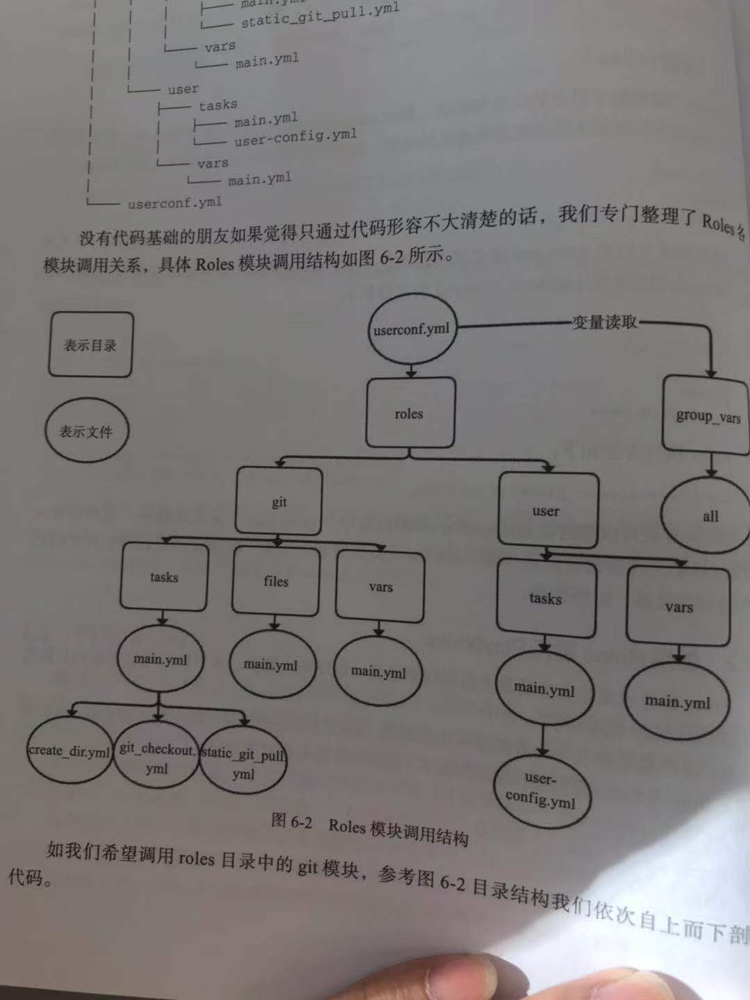

Contents
- Ansible入门与playbook实战
- 关于Ansible
- Ansible SSH工作机制
- 安装Ansible
- 使用expet来批量分发ssh-key
- Ansible与正则
- 通过Ad-Hoc研究Ansible的并发特性
- Ansible常用的核心模块
- 列出webserver组的主机
- 远程命令模块
- command模块
- copy模块
- stat模块
- get_url模块
- yum模块
- cron模块
- mount模块
- service模块
- sysctl包管理模块
- user模块
- group模块
- file模块
- setup模块
- ansible配合YAML使用
- Roles介绍
- Ansible的内置变量参数
- 创建roles时的注意事项
- Ansible 的Galaxy
- Playbook实战1：Ansible部署Tomcat企业实战
- Ansible管理windows实践
18.6. Ansible入门与playbook实战¶
- 参考文献
18.6.1. 关于Ansible¶
Ansible是⼀种批量、⾃动部署⼯具，不仅可以批量，还可以⾃动。
它主要基于ssh进⾏通信，不要求客户端(被控制端)安装ansible
Ansible是新出现的自动化运维工具，基于Python开发，
集合了众多运维工具（puppet、cfengine、chef、func、fabric）的优点。
实现了批量系统配置、批量程序部署、批量运行命令等功能。
Ansible是基于模块工作的，本身没有批量部署的能力。
真正具有批量部署的是Ansible所运行的模块，Ansible只是提供一种框架。
18.6.2. Ansible SSH工作机制¶
Ansible执行命令时，通过其底层传输连接模块，将一个或数个文件，或者定义一个Play或Command命令传输到远程服务器/tmp目录的临时文件，并在远程执行这些Play/Comand命令，然后删除这些临时文件，同时回传整体命令执行结果。这一系列操作在未来的Ansible版本中会越来越简单、直接，同时快速、稳定、安全。
通过了解其工作机制及其一直以来秉承的去中心化思想，我们可以总结，Ansible是非C/S架构，自身没有Client端，其主要特点如下。
❑无客户端，只需安装SSH、Python即可，其中Python建议版本为2.6.6以上。
❑基于OpenSSH通信，底层基于SSH协议（Windows基于PowerShell）。
❑支持密码和SSH认证，因可通过系统账户密码认证或公私钥认证，所以整个过程简单、方便、安全。建议使用公私钥方式认证，因为密码认证方式的密码需明文写配置文件，虽然配置文件可加密，但会增加Ansible使用的复杂度。
❑支持Windows，但仅支持客户端，服务端必须是Linux系统。
❑Clear（简易）:YAML语法，Python语言编写，易于管理，API简单明了；❑Fast（敏捷）：快速学习，设置简单，无需任何第三方软件；
❑Complete（全面）：配置管理、应用部署、任务编排等功能集于一身，丰富的内置模块满足日常功能所需；
❑Efficient（高效）：没有额外软件包消耗系统性能；
❑Secure（安全）：没有客户端，底层基于OpenSSH，保证通信的安全可靠性。
18.6.3. 安装Ansible¶
PIP方式¶
Ansible底层也是基于Python编写，所以可以通过PIP方式安装Ansible。
步骤1：安装python-pip及python-devel程序包。
# 安装python-pip程序包及python-devel
yum -y install python-pip python-devel
步骤2：安装Ansible服务。
PIP改为国内镜像源下载
清华：https://pypi.tuna.tsinghua.edu.cn/simple/
阿里云：http://mirrors.aliyun.com/pypi/simple/
中国科技大学 https://pypi.mirrors.ustc.edu.cn/simple/
华中理工大学：http://pypi.hustunique.com/
山东理工大学：http://pypi.sdutlinux.org/
豆瓣：http://pypi.douban.com/simple/
# 安装前确保服务器的gcc、glibc开发环境均已安装，系统几乎所有的软件包编译环境均基于gcc。
yum -y install gcc glibc-devel zlib-devel rpm-build openssl-devel
# 升级PIP至最新版本
pip install --upgrade pip
#PIP改为国内镜像源下载ansible
pip install ansible -i http://mirrors.aliyun.com/pypi/simple/ --trusted-host mirrors.aliyun.com
如果想配置成默认的源，方法如下：
需要创建或修改配置文件（一般都是创建），
linux的文件在~/.pip/pip.conf，
windows在%HOMEPATH%\pip\pip.ini
修改内容为：
[global]
index-url = http://pypi.douban.com/simple
[install]
trusted-host=pypi.douban.com
这样在使用pip来安装时，会默认调用该镜像。
如下其他验证安装是否成功的方式也一样，均可执行ansible–version验证。
源码安装方式¶
yum install git –y && git clone git:// github.com/ansible/ansible.git –recursive
// 切换至程序包目录
cd ./ansible
// 执行env-setup脚本，安装Ansible软件包
source ./hacking/env-setup
YUM方式¶
安装⽅法有多种，可以下载源码后编译安装，可以从git上获取资源安装，也可以rpm包安装。rpm安装需要配置
epel源。
经测试，CentOS 6上安装ansible 2.3版本有可能会⾮常慢，需要将ansible执⾏的结果使⽤重定向或者-t选项保存
到⽂件中，下次执⾏才会快。
cat <<eof>>/etc/yum.repos.d/my.repo
[epel]
name=epel
baseurl=http://mirrors.aliyun.com/epel/7Server/x86_64/
enable=1
gpgcheck=0
eof
或者
修改yum源:
wget -O CentOS-Base.repo http://mirrors.aliyun.com/repo/Centos-7.repo
wget -O /etc/yum.repos.d/epel.repo http://mirrors.aliyun.com/repo/epel-7.repo
登陆并修改/etc/ssh/sshd_config
PasswordAuthentication no改为PasswordAuthentication yes并保存
yum list ansible
yum install ansible -y
[root@hujianli-linux ansible]# pwd
/etc/ansible
[root@hujianli-linux ansible]# ll
-rw-r--r--. 1 root root 20269 10月 9 09:34 ansible.cfg
-rw-r--r--. 1 root root 1016 10月 9 09:34 hosts
drwxr-xr-x. 2 root root 6 10月 9 09:34 roles
配置被管理的主机
Ansible通过读取默认主机清单 /etc/ansible/hosts文件，修改主机与组配置后，可同时连接到多个被管理主机上
执行任务，比如定义一个websrvs组，包含3台主机的IP地址。
# 先备份Ansible的host文件
cp -r /etc/ansible/hosts{,._bak}
cat >/etc/ansible/hosts <<-EOF
## green.example.com
## blue.example.com
## 192.168.100.1
## 192.168.100.10
172.16.72.28
172.16.72.29
172.16.72.4
# Ex 2: A collection of hosts belonging to the 'webservers' group
## [webservers]
## alpha.example.org
## beta.example.org
## 192.168.1.100
## 192.168.1.110
[webservers]
172.16.72.28
172.16.72.29
172.16.72.4
EOF
分发密钥设置免密登录
#生成SSH秘钥的连接
在主控端主机（SN2013-08-020）创建密钥，执行：ssh-keygen-t
rsa，有询问直接按回车键即可，将在/root/.ssh/下生成一对密钥，其中
id_rsa为私钥，id_rsa.pub为公钥（需要下发到被控主机用户.ssh目录，同时要求重命名成authorized_keys文件）
# ssh-keygen -t rsa
# ssh-copy-id root@<client_ip> -p 22
# 或者生成自定义的rsa key认证
ssh-keygen -N "" -b 4096 -t rsa -C "stanley@magedu.com" -f /root/.ssh/stanley.rsa
// 为本机添加密钥认证
ssh-copy-id –i /root/.ssh/stanley.rsa root@localhost
[root@hujianli-linux ansible]# ansible-doc -s yum
#列出yum模块的描述信息和操作动作
18.6.4. 使用expet来批量分发ssh-key¶
# 安装expect、vim
yum -y install expect vim wget
auto_sshcopyid.exp
# expect脚本
# cat auto_sshcopyid.exp
#!/usr/bin/expect
set timeout 10
set user_hostname [lindex $argv 0]
set password [lindex $argv 1]
spawn ssh-copy-id $user_hostname
expect {
"(yes/no)?"
{
send "yes\n"
expect "*password: " { send "$password\n" }
}
"*password: " { send "$password\n" }
}
expect eof
sshkey.sh
#!/usr/bin/env bash
#usage:xxx
#scripts_name:xxx.sh
# author：xiaojian
PWD=$(pwd)
#ip=`echo -n "$(seq -s "," 3 30)" | xargs -d "," -i echo 172.16.72.{}`
declare -A projects=(
[aget1]="172.16.72.28"
[aget2]="172.16.72.29"
[aget3]="172.16.72.4")
password="admin#123"
#user_host=`awk '{print $3}' /root/.ssh/id_rsa.pub`
for project in ${!projects[@]};do
client="${projects[${project}]}"
# echo $client
${PWD}/auto_sshcopyid.exp root@$client $password &>>/tmp/a.log
if [ "$?" -eq 0 ]; then
ssh root@$client "echo $client ssh Remote communication is ok! "
fi
done
或者使用python脚本
#!/usr/bin/env python
# -*- coding:utf8 -*-
# auther; 18793
# Date：2019/11/8 13:23
# filename: sshkey.py
import sys
import subprocess
IP_list = ["172.16.72." + str(i) for i in range(2, 30)]
res = 0
try:
from pexpect import pxssh
import pexpect
except:
res = subprocess.call("pip install pexpect", shell=True, stdout=open("/dev/null"))
from pexpect import pxssh
import pexpect
username = "root"
passwd = "admin#123"
def task():
for ip in IP_list:
try:
s = pxssh.pxssh()
s.login(ip, username, passwd)
child = pexpect.spawn('ssh-copy-id -i /root/.ssh/id_rsa.pub root@' + ip)
# 将pexpect的输入输出信息写到mylog.txt文件中
fout = open('mylog.txt', 'w')
child.logfile = fout
child.expect(['password:'])
child.sendline('admin#123')
print("\033[32m【{}】 Key registration successful!\033[0m".format(ip))
except:
pass
print("\033[32m Key transfer completed \033[0m")
if __name__ == '__main__':
task()
通过ssh连接到另一个平台，进行相关cmd操作：
#!/usr/bin/env python
# -*- coding:utf8 -*-
# auther; 18793
# Date：2019/12/1 11:44
# filename: sshkey01.py
import paramiko
def sshe(ip, username, passwd, cmd):
try:
ssh = paramiko.SSHClient()
ssh.set_missing_host_key_policy(paramiko.AutoAddPolicy())
ssh.connect(ip, 22, username, passwd)
stdin, stdout, stderr = ssh.exec_command(cmd)
print(stdout.read())
print("{}\tOK\n".format(ip))
ssh.close()
except:
print("{}\t Error\n".format(ip))
if __name__ == '__main__':
sshe("192.168.1.1", "root", "admin#123", "hostname;ifconfig")
或者使用ansible自动推送密钥
ansible -01-2 批量分发公钥
# 参考文献
https://my.oschina.net/attacker/blog/679618
18.6.5. Ansible与正则¶
重启webservers组所有主机的httpd服务
ansible webservers -m yum -a "name=httpd state=latest"
ansible webservers -m service -a "name=httpd state=restarted"
(1)All（全量）匹配
匹配所有主机，all或*号功能相同，如检测所有主机存活情况。
ansible all -m ping
ansible "*" -m ping
(2)逻辑或（or）匹配
如果我们希望同时对多个组同时执行，互相之间用“:”（冒号）分割即可。
webserver1:webserver2
ansible "webserver1:webserver2" -m ping
(3)逻辑非(!)匹配
逻辑非用感叹号（! ）表示，主要针对多重条件的匹配规则，使用方式如下：
// 所有在webserver1组但不在webserver2组的主机
webserver1:!webserver2
（4）逻辑与（&）
匹配和逻辑非一样，逻辑与也主要针对多重条件的匹配规则，只是逻辑上的判断不同。逻辑与使用&表示，请看如下示例：
// 所有在webserver1组和webserver2组同时存在的主机
webserver1:&webserver2
（5)多条件组合Ansible同样支持多条件的复杂组合，
该情况企业应用不多，这里做简单举例说明。
web1:web2:&db1:!db2
（6）模糊匹配*通配符在Ansible表示0个或多个任意字符，主要应用于一些模糊规则匹配，在平时的使用中应用频率非常高，请参考如下示例：
webserver*
web*:db1
（7）域切割
用得少，这里不介绍
（8）正则匹配Ansible同样完整支持正则匹配功能，“～”开始表示正则匹配。
~(web|db).*\.example\.com
检测beta.example.com、web.example.com、green.example.com、beta.example.org、web. example.org、green.example.org的存活，使用如下匹配模式：
ansible "~(beta|web|green)\.example\.(com|org)" -m ping
18.6.6. 通过Ad-Hoc研究Ansible的并发特性¶
Ansible和Ansible-playbook默认会fork 5个线程并发执行命令，但在实际工作中，如果主机数量众多，Ansible并发5个线程是远不能满足企业所需的
ansible webservers -m ping -f 2
这里Ansible为我们提供了便捷的选项，-f指定线程数，如-f 1表示并发启动一个线程，-f 10则表示同时启动10个线程并发执行命令。其实查看源码可知，Ansible使用multiprocessing管理多线程。
单台主机的性能始终有限，建议并发数配置的CPU核数偶数倍就好。如4Cores 8GB的服务器，建议最多并发20个线程。
ansible-doc命令后跟[options]参数或[模块名]，显示模块用法说明，具体示例如下：
// 列出支持的模块
ansible-doc –l
// 模块功能说明
ansible-doc ping
18.6.8. 列出webserver组的主机¶
ansible webservers --list
hosts (3):
172.16.60.178
172.16.60.226
172.16.60.9
18.6.9. 远程命令模块¶
# 检测服务器存活
ansible all -m ping
ansible webservers -m command -a "free -m"
ansible webservers -a "df -Th"
// 以bruce用户执行ping存活检测
ansible all -m ping -u bruce
// 以bruce sudo至root执行ping存活检测
ansible all -m ping -u bruce --sudo
// 以bruce sudo至batman用户执行ping存活检测
ansible all -m ping -u bruce --sudo --sudo-user batman
ansible webservers -m script -a "/home/test.sh 12 34"
ansible webservers -m shell -a "/home/test.sh"
## shell 模块
ansible-doc -s shell
#创建用户后，无交互式给用户设置密码
ansible dbservers -m user -a 'name=user1'
ansible dbservers -m shell -a 'echo "123.com"|passwd user1 --stdin'
ansible webservers -m shell -a "/home/test.sh 12 22"
## script模块
# ansible-doc -s script
#创建一个本地脚本，复制到被管理主机上运行,本地创建test.sh脚本
ansible dbservers -m script -a 'test.sh'
ansible webservers -m script -a "/home/test.sh 12 34"
18.6.10. command模块¶
(1)功能
#"-m"指定模块名称，"-a"⽤于为模块指定各模块参数
#Ansible管理工具使用-m 选项来指定使用模块，默认使用command模块，即 -m选项省略时会运行此模块，用于在被管理主机上运行命令。
(2)示例
ansible 192.168.1.108 -m command -a 'date'
#使用被管理中的主机分类运行
ansible webservers -m command -a 'date'
ansible dbservers -m command -a 'date'
#所有主机清单中的主机上运行
ansible all -m command -a 'date'
#若省略-m 选项，默认运行command模块
ansible all -a 'tail -l /etc/passwd'
#安装Django。
ansible app -m pip -a "name=django state=present"
# 检查Django安装是否正常
ansible app -m command -a "python -c 'import django; print django.get_version()'"
18.6.11. copy模块¶
（1）功能
实现主控端向目标主机拷贝文件，类似于scp的功能。
（2）例子
以下示例实现拷贝/home/test.sh文件至webserver组目标主机/tmp/目
录下，并更新文件属主及权限（可以单独使用file模块实现权限的修
改，格式为：path=/etc/foo.conf owner=foo group=foo mode=0644）。
#Ansible 中的copy模块用于实现文件复制和批量下发文件，src来定义本地源文件路径，使用dest定义被管理主机文件路径，使用content定义信息内容来生成目标文件
ansible-doc -s copy
ansible webservers -m copy -a "src=/home/test.sh dest=/tmp/ owner=root group=root mode=0755"
ansible dbservers -m copy -a 'src=/etc/fstab dest=/tmp/fstab.ansible owner=root mode=640'
#将“Hello Ansible Hi Ansible”写入管理主机的/tmp/test.ansible文件中
ansible dbservers -m copy -a 'content="Hello Ansible Hi Ansible" dest=/tmp/test.ansible'
18.6.12. stat模块¶
（1）功能
获取远程文件状态信息，包括atime、ctime、mtime、md5、uid、gid等信息
（2）例子
ansible webservers -m stat -a "path=/etc/sysctl.conf"
18.6.13. get_url模块¶
（1）功能
实现在远程主机下载指定URL到本地，支持sha256sum文件校验
（2）例子
ansible webservers -m get_url -a "url=http://www.baidu.com dest=/tmp/index.html mode=0440 force=yes"
18.6.14. yum模块¶
#Ansible中的yum模块负责在被管理的主机数安装与卸载软件包，前提是在每个节点配置自己的YUM仓库，name指定要安装的软件包
#带上软件包的版本号，state指定安装软件包的状态，present、latest用来表示安装，absent表示卸载
ansible-doc -s yum
（1）功能
Linux平台软件包管理操作，常见有yum、apt管理方式。
（2）例子
Ubuntu系统
ansible webservers -m apt -a "pkg=curl state=latest
#安装zsh软件包
ansible dbservers -m yum -a 'name=zsh'
#卸载zsh软件包
ansible dbservers -m yum -a 'name=zsh,state=absent'
ansible webservers -m yum -a "name=curl state=latest"
#Redis安装命令：
ansible db-m yum -a "name=redis state=present"。
#Redis安装检查：
ansible db-m command -a "redis-cli--version"。
# 安装MariaDB-server
ansible db -m yum -a "name=MariaDB-server state=present"
# #安装MySQL-python和python-setuptools依赖包。
ansible app -m yum -a "name=MySQL-python state=present"
ansible app -m yum -a "name=python-setuptools state=present"
18.6.15. cron模块¶
(1)功能
#Ansible中的cron模块用于定义任务计划，其中有两种状态，(state):present表示添加(省略状态时默认使用),absent表示移除。
[root@hujianli-linux ansible]# ansible-doc -s cron #查看cron模块的描述信息和操作动作
（2）例子
#添加计划任务
ansible dbservers -m cron -a 'minute="*/10" job="/bin/echo hello" name="test cron job"'
192.168.1.108 | CHANGED => {
"changed": true,
"envs": [],
"jobs": [
"test cron job"
]
#查看crontab计划任务
ansible dbservers -a 'crontab -l'
192.168.1.108 | CHANGED | rc=0 >>
#Ansible: test cron job
*/10 * * * * /bin/echo hello
#移除计划任务
ansible dbservers -m cron -a 'minute="*/10" job="/bin/echo hello" name="test cron job" state=absent'
18.6.16. mount模块¶
（1）功能
远程主机分区挂载
（2）例子
ansible webservers -m mount -a "name=/mnt/data src=/dev/sd0 fstype=ext3 opts=ro state=present"
18.6.17. service模块¶
（1）功能
远程主机系统服务管理。
[root@hujianli-linux ~]# ansible-doc -s service #查看service模块的描述
#在 Ansible中使用service模块来控制管理服务器的运行状态，enable表示是否开机自启动， 值为true或者false，使用name来定义服务名称
使用state指定服务状态，取值为started、stoped、restarted
（2）示例
ansible webservers -m service -a "name=nginx state=stopped"
ansible webservers -m service -a "name=nginx state=restarted"
ansible webservers -m service -a "name=nginx state=reloaded"
#安装httpd服务
ansible webservers -m yum -a "name=httpd state=latest"
#查看httpd服务的状态
ansible dbservers -a 'service httpd status'
#查看http服务开机启动状态
ansible dbservers -a 'chkconfig httpd status'
#设置httpd服务为开机自启动
ansible dbservers -m service -a 'enable=ture name=httpd state=started'
ansible webservers -m service -a "name=nginx state=stopped"
ansible webservers -m service -a "name=nginx state=restarted"
ansible webservers -m service -a "name=nginx state=reloaded"
18.6.18. sysctl包管理模块¶
（1）功能
远程Linux主机sysctl配置。
sysctl模块用于远程主机sysctl的配置
sysctl模块可以在更改配置之后执行/sbin/sysctl –p
ansible-doc sysctl
(2)示例
#在/etc/sysctl.conf中将vm.swappiness设置为5
ansible webservers -m sysctl -a "name=vm.swappiness value=5 state=present sysctl_file=/etc/sysctl.conf"
# 查看是否替换成功
[root@hu-k8s-portworx-master ssh_ansible]# ansible webservers -m command -a "tail -1 /etc/sysctl.conf"
172.16.72.28 | CHANGED | rc=0 >>
vm.swappiness=5
172.16.72.29 | CHANGED | rc=0 >>
vm.swappiness=5
172.16.72.4 | CHANGED | rc=0 >>
vm.swappiness=5
#从/etc/sysctl.conf中删除vm.swappiness条目
ansible webservers -m sysctl -a "name=vm.swappiness state=absent sysctl_file=/etc/sysctl.conf"
#支持ipv4的路由转发（路径与Centos版本有关）
ansible webservers -m sysctl -a "name=net.ipv4.ip_forward value=1 sysctl_set=yes
sysctl_file=/usr/lib/sysctl.d/50-default.conf"
# 在文件中设置ip转发并在必要时重新加载
ansible webservers -m sysctl -a "name=net.ipv4.ip_forward value=1 sysctl_set=yes
state=present reload=yes sysctl_file=/usr/lib/sysctl.d/50-default.conf"
18.6.19. user模块¶
(1)功能
#Ansible中的user模块用于创建新用户和更改、删除已存在的用户。其中name选项用来这么创建的用户名称。
远程主机系统用户管理。
(2)示例
#创建用户
ansible dbservers -m user -a 'name="user1"'
#该场景中我们可以掌握如下技能点。
1）groups设定：groups=用户组1，用户组2……
2）增量添加属组：append=yes
3）表明属组状态为新建：state=present
ansible db -m user -a "name=dba shell=/bin/bash groups=admins,dbagroup append=yes home=/home/dba/ state=present"
#设置系统用户tom的密码为redhat123。
ansible db -m user -a "name=tom shell=/bin/bash password=to46pW3GOukvA update_password=always"
#删除用户
ansible dbservers -m user -a 'name="user1" state=absent'
ansible db -m user -a "name=dba state=absent remove=yes"
######## windows 用户管理 ###########
#新增用户stanley，密码为magedu@123，属组为Administrators。
ansible windows -m win_user -a "name=stanley passwd=magedu@123 group=Administrators"
######## 应用层用户管理 ####################
#新增MySQL用户stanley，设置登录密码为magedu@bj，对zabbix.*表有ALL权限
ansible db -m mysql_user -a 'login_host=localhost login_password=magedu login_user=root name=stanley password=magedu@bj priv=zabbix.*:ALL state=present'
18.6.20. group模块¶
(1)功能
#Ansible中的group模块用于对用户组进行管理
ansible-doc -s group
（2）例子
#创建mysql组，将mysql用户添加到mysql组中
ansible dbservers -m group -a 'name=mysql gid=306 system=yes'
ansible dbservers -m user -a 'name=mysql uid=306 system=yes group=mysql'
18.6.21. file模块¶
(1)功能
#Ansible中使用file模块来设置文件属性，path指定文件路径，sec指定源文件路径，使用name或dest来替换创建文件的符号链接
ansible-doc -s file
(2)例子
#设置管理主机文件/tmp/fstab.ansible 所属住为mysql，所属组为mysql，权限为644
ansible dbservers -m file -a "owner=mysql group=mysql mode=644 path=/tmp/fstab.ansible"
#设置文件/tmp/fstab.link 为文件/tmp/fstab.ansible的链接文件
ansible dbservers -m file -a 'path=/tmp/fstab.link src=/tmp/fstab.ansible state=link'
18.6.22. setup模块¶
(1)功能
在 Ansible中使用setup模块收集、查看被管理主机的facts，每个被管理主机在接收并允许管理命令之前，都会将自己的
相关信息（操作系统版本、IP地址等）发送给控制主机
ansible-doc -s setup
(2)例子
ansible dbservers -m setup | grep "ansible_python_version"
# setup模块来获取对应主机上面的所有可用的Facts信息,运行playbook时会自动加载这些facts
# Ansible在执行Playbook任务之前会收集远程主机Facts信息
ansible services -m setup|grep ansible_python_version
#在实际应用当中，运用得比较多的Facts变量有ansible_os_family、ansible_hostname、ansible_memtotal_mb等，这些变量通常会被拿来用作when语句的判断条件，来决定下一步的操作。
ansible常用模块参考文章：
18.6.23. ansible配合YAML使用¶
1、playbook的核心元素
hosts : playbook配置文件作用的主机
tasks: 任务列表
variables: 变量
templates:包含模板语法的文本文件
handlers :由特定条件触发的任务
roles :用于层次性、结构化地组织playbook。roles 能够根据层次型结构自动装载变量文件、tasks以及handlers等
2、playbook运行方式
ansible-playbook --check 只检测可能会发生的改变,但不真执行操作
ansible-playbook --list-hosts 列出运行任务的主机
ansible-playbook --syntax-check playbook.yaml 语法检测
ansible-playbook -t TAGS_NAME playbook.yaml 只执行TAGS_NAME任务
// Ansible-playbook新增的功能参数如下：
·--list-tags：列出所有可用的tags。
·--list-tasks：列出所有即将被执行的任务。
·--skip-tags=SKIP_TAGS：跳过指定的tags任务。
·--start-at-task=START_AT_TASK：从第几条任务开始执行。
·--step：逐步执行Playbook定义的任务，并经人工确认后继续执行下一步任务。
·--syntax-check：检查Playbook中的语法书写。
·-t TAGS，--tags=TAGS：指定执行该tags的任务。
//在yaml中打标签
# 最简洁的写法
tags: ['one', 'two', 'three']
# 最清晰的写法
tags:
- one
- two
- three
#如果您只想运行一个非常长的剧本的“配置”和“包”部分，您可以在命令行上使用该选项：--tags
$ ansible-playbook example.yml --tags "configuration,packages"
#另一方面，如果要在没有某些标记任务的情况下运行playbook ，可以使用命令行选项：--skip-tags
$ ansible-playbook example.yml --skip-tags "packages"
ansible-playbook playbook.yaml
#inventory（主机清单），主机清单中将被管理主机进行分组命名
#默认主机清单为/etc/ansible/hosts,例如：
[dbservers]
db1.example.org
db2.example.org:2222
#如果主机名遵循类似的命名规则，则可以使用列表的方式标示各个主机
[webservers]
www[01:05].example.org
[dbservers]
db-[a:f].example.org
#如果不配置SSH秘钥认证，可以这样对管理主机进行认证
vim /etc/ansible/hosts
[wbservers]
192.168.1.110 ansible_ssh_user=root ansible_ssh_pass=123.com
#基础配置yml，关闭iptables、关闭selinux、
cat test.yml
---
- hosts: dbservers
user: root
tasks:
- name: no selinux
action: command /usr/sbin/setenforce 0
- name: no iptables
action: service name=iptables state=stopped
- name: made up task just to show variables work here
action: command /bin/echo release is
#安装部署httpd服务-version1
[root@hujianli-linux ansible]# cat httpd01.yml
---
- hosts: dbservers
remote_user: root
tasks:
- name: install httpd
yum: name=httpd state=present
- name: install configure file
copy: src=httpd.conf dest=/etc/httpd/conf/
- name: start httpd service
service: name=httpd state=started
#测试playbook
ansible-playbook --check httpd01.yml
#执行Playbook时，哪些主机将会受影响，则使用--list-hosts选项
ansible-playbook 2-services.yml --list-hosts
#运行playbook
ansible-playbook httpd01.yml
#ubuntu中安装nginx
[root@hujianli-linux ansible]# cat install_nginx.yml
---
- hosts: dbservers
tasks:
- name: Installs nginx web server
apt: pkg=nginx state=installed update_cache=true
notify:
- start nginx
handlers:
- name: start nginx
service: name=nginx state=started
#执行批量安装nginx
ansible-playbook install_nginx.yml
Ansible-playbook：其他选项技巧
·--inventory=PATH（-i PATH）：指定inventory文件，默认文件是/etc/ansible/hosts。
·--verbose（-v）：显示详细输出，也可以使用-vvvv显示精确到每分钟的输出。
·--extra-vars=VARS（-e VARS）：定义在Playbook使用的变量，格式为："key=value，key=value"。
·--forks=NUM（-f NUM）：指定并发执行的任务数，默认为5，根据服务器性能，调大这个值可提高Ansible执行效率。
·--connection=TYPE（-c TYPE）：指定连接远程主机的方式，默认为SSH，设为local时，则只在本地执行Playbook，建议不做修改。
·--check：检测模式，Playbook中定义的所有任务将在每台远程主机上进行检测，但并不直正执行。
一个playbook的示例：
---
- host: app
vars:
http_port: 80
max_cllients: 200
remote_user: root
# 注意一个name只能包括一个task
task:
- name: yum install apache
yum: pkg=httpd state=latest
- name: write the apache config file
template: src=/srv/httpd.j2 dest=/etc/httpd.conf
notify: restart apache #触发重启
- name: ensure apache is running
service: name=httpd state=started
#触发器
handlers:
- name: restart apache
service: name=httpd state=restarted
shell与ansible的互相转换 apache.sh
# !/bin/bash
# 安装Apache
yum install --quiet -y httpd httpd-devel
# 复制配置文件
cp /path/to/config/httpd.conf /etc/httpd/conf/httpd.conf
cp/path/to/httpd-vhosts.conf /etc/httpd/conf/httpd-vhosts.conf
# 启动Apache，并设置开机启动
service httpd start
chkconfig httpd on
将上述Shell脚本转换为一个完整的Playbook后，内容如以下代码所示：
apache2.yml
---
- hosts: all
tasks:
- name: "安装Apache"
command: yum install --quiet -y httpd httpd-devel
- name: "复制配置文件"
command: cp /tmp/httpd.conf /etc/httpd/conf/httpd.conf
command: cp /tmp/httpd-vhosts.conf /etc/httpd/conf/httpd-vhosts.conf
- name: "启动Apache，并设置开机启动"
command: service httpd start
command: chkconfig httpd on
# ansible-playbook ./playbook.yml
示例：部署Apache服务¶
---
- hosts: all #所有主机
sudo: yes #告诉Ansible通过sudo来运行相应命令，这样所有命令将会以root身份执行。
tasks:
- name: 安装Apache
yum: name={{ item }} state=present
with_items:
- httpd
- httpd-devel
- name: 复制配置文件
copy:
src: "{{ item.src }}"
dest: "{{ item.dest }}"
owner: root
group: root
mode: 0644
with_items:
- {
src: "/tmp/httpd.conf",
dest: "/etc/httpd/conf/httpd.conf" }
- {
src: "/tmp/httpd-vhosts.conf",
dest: "/etc/httpd/conf/httpd-vhosts.conf"
}
- name: 检查Apache运行状态，并设置开机启动
service: name=httpd state=started enabled=yes
示例：安装tomcat软件¶
创建vars.yml文件和tomcat.yml文件，在同一目录下 vars.yml
---
#软件包下载路径
download_dir: /tmp
#tomcat版本
tomcat_version: 8.0.35
#tomcat安装路径
tomcat_dir: /opt/tomcat
#solr安装路径
solr_dir: /opt/solr
#solr版本号
solr_version: 6.1.0
tomcat.yml
---
- hosts: all
vers_files:
- vars.yml
task:
- name: 发送JDK软件包和配置文件到远程主机
copy: "src={{item.src}} dest={{item.dest}}"
with_items:
- src: "./jdk-8u11-linux-x64.tar.gz"
dest: "/tmp"
- src: "./java.sh"
dest: "/etc/profile.d/"
- name: 创建java安装目录
command: mkdir -p /opt/java
................
- name: 创建tomcat安装目录
command: mkdir -p {{tomcat_dir}}
- name: 添加运行tomcat所需的普通用户
user: "name=tomcat shell=/sbin/nologin"
- name: 下载tomcat软件包
get_url:
url: file:///tmp/afile.txt
dest: /tmp/afilecopy.txt
- name: 解压tomcat软件包
command: tar -C {{tomcat_dir}} -xvf ............
- name: 发送配置文件到远程主机
copy: "src=./tomcat.conf dest=/etc/init/tomcat.conf"
- name: 重载配置文件
command: initctl reload-configuretion
- name: 下载solr软件包
ger_url:
..........
- name: 创建安装目录
............
Block块¶
---
- hosts: web
tasks:
# Install and configure Apache on RedHat/CentOS hosts.
- block:
- yum: name=httpd state=present
- template: src=httpd.conf.j2 dest=/etc/httpd/conf/httpd.conf
- service: name=httpd state=started enabled=yes
when: ansible_os_family == 'RedHat'
sudo: yes
# Install and configure Apache on Debian/Ubuntu hosts.
- block:
- apt: name=apache2 state=present
- template: src=httpd.conf.j2 dest=/etc/apache2/apache2.conf
- service: name=apache2 state=started enabled=yes
when: ansible_os_family == 'Debian'
sudo: yes
块功能用来处理任务的异常
tasks:
- block:
- name: Shell script to connect the app to a monitoring service.
script: monitoring-connect.sh
rescue:
- name: 只有脚本报错时才执行
debug: msg="There was an error in the block."
always:
- name: 无论结果如何都执行
debug: msg="This always executes."
动态Includes¶
tasks/tasks01.yml
---
- hosts: web
task:
- name: check if extra_tasks.yml is present
#判断文件是否存在，并获取返回值
stat: path=extras/extra-task.yml
register: extra_task_file
connection: local
tasks/main.yml
# 只有当extra_task_file文件存在时，加载
- include: tasks01.yml
when: extra_task_file.stat.exists
playbooks Includes使用技巧¶
- hosts: all
remote_user: root
tasks:
[...]
- include: web.yml # 引用web.yml playbook
- include: db.yml # 引用db.yml playbook
好处：如果需要执行全部命令时，只要通过一条命令执行主playbook文件即可。如果针对某个功能变更，只需要修改或执行对应的playbook文件
实战一：Ansible部署Node.js企业实践¶
添加第三方源
# !/bin/bash
# 导入 Remi GPG 密钥
wget http://rpms.famillecollet.com/RPM-GPG-KEY-remi \
-O /etc/pki/rpm-gpg/RPM-GPG-KEY-remi
rpm --import /etc/pki/rpm-gpg/RPM-GPG-KEY-remi
# 安装 Remi源
rpm -Uvh --quiet \
http://rpms.famillecollet.com/enterprise/remi-release-6.rpm
# 安装EPEL源
yum install epel-release
# 安装 Node.js (npm + 和它的依赖关系)
yum --enablerepo=epel install npm
install_nodejs.yml
---
- hosts: all
remote_user: root
tasks:
- name: 导入 Remi GPG 密钥
rpm_key: "key={{ item }} state=present"
with_items:
- "http://rpms.famillecollet.com/RPM-GPG-KEY-remi"
- name: Install Remi repo.
command: "rpm -Uvh --force {{ item.href }} creates={{ item.creates }}"
with_items:
- href: "http://rpms.famillecollet.com/enterprise/remi-release-6.rpm"
creates: "/etc/yum.repos.d/remi.repo"
- name: 安装Remi源
yum: name=epel-release state=present
- name: 关闭防火墙
service: name=iptables state=stopped
- name: 安装NodeJS和npm
yum: name=npm state=present enablerepo=epel
- name: 使用Taobao的npm源
command: >
npm config set registry https://registry.npm.taobao.org
- name: 关闭npm的https
command: >
npm config set strict-ssl false
- name: 安装Forever(用于启动Node.js app)
npm: name=forever global=yes state=latest
- name: 确保 Node.js app的目录存在
file: "path={{ node_apps_location }} state=directory"
- name: 拷贝Node.js app整个目录到目标主机
copy: "src=app dest={{ node_apps_location }}"
- name: 安装package.json文件中定义的依赖关系
npm: "path={{ node_apps_location }}/app"
实战二：Drupal基于LAMP的自动化部署¶
playbook.yml
---
- hosts: all
vars_files:
- vars.yml
pre_tasks:
- name: Update apt cache if needed.
#我们将得用apt模块来更新APT缓存，同时设置缓存有效期为3600秒
apt: update_cache=yes cache_valid_time=3600
tasks:
- name: "安装用来管理ATP源的工具"
apt: name={{ item }} state=present
with_items:
- python-apt
- python-pycurl
- name: "添加包含5.5版本PHP的ondrej源"
apt_repository: repo='ppa:ondrej/php5' update_cache=yes
- name: "安装Apache、MySQL、PHP，以及依赖关系"
apt: name={{ item }} state=present
with_items:
- git
- curl
- sendmail
- apache2
- php5
- php5-common
- php5-mysql
- php5-cli
- php5-curl
- php5-gd
- php5-dev
- php5-mcrypt
- php-apc
- php-pear
- python-mysqldb
- mysql-server
- name: "关闭防火墙（因为本项目仅供本地开发使用）"
service: name=ufw state=stopped
- name: "启动Apache、MySQL及PHP"
service: "name={{ item }} state=started enabled=yes"
with_items:
- apache2
- mysql
- name: Enable Apache rewrite module (required for Drupal).
apache2_module: name=rewrite state=present
notify: restart apache
- name: 在Apache中为Drupal添加virtualhost
template:
src: "templates/drupal.dev.conf.j2"
dest: "/etc/apache2/sites-available/{{ domain }}.dev.conf"
owner: root
group: root
mode: 0644
notify: restart apache
- name: 在sites-enabled目录中添加Drupal所需配置文件的符号链接
file:
src: "/etc/apache2/sites-available/{{ domain }}.dev.conf"
dest: "/etc/apache2/sites-enabled/{{ domain }}.dev.conf"
state: link
notify: restart apache
Handlers是Playbook中一种特殊的任务类型，我们通过在任务末尾使用notify选项加Handlers的名称，来触发对应名称下Handlers中定义的任务。在本例中，我们将在Apache配置完成后，或Apache配置文件变动过后，使用notify：restart apache来调用handler重启Apache服务。
handlers:
- name: restart apache
service: name=apache2 state=restarted
Ansible Playbook拓展¶
Handlers¶
#实现了一个任务同时调用多个Handlers。
- name: Rebuild application configuration.
command: /opt/app/rebuild.sh
notify:
- restart apache
- restart memcached
handlers:
- name: restart apache
service: name=apache2 state=restarted
#实现Handlers调用Handlers
handlers:
- name: restart apache
service: name=apache2 state=restarted
notify: restart memcached
- name: restart memcached
service: name=memcached state=restarted
环境变量¶
使用lineinfile模块直接修改远程用户的~/.bash_profile文件
- name: 为远程主机上的用户指定环境变量
lineinfile: dest=~/.bash_profile regexp=^ENV_VAR= line=ENV_VAR=value
为了再后续的任务中使用此前定义过的变量，可以使用register选项来将环境变量存储到自定义的变量中去。
- name: 为远程主机上的用户指定环境变量
lineinfile: dest=~/.bash_profile regexp=^ENV_VAR= line=ENV_VAR=value
- name: 获取刚刚指定的环境变量，并将其保存到自定义变量foo中
shell: 'source ~/.bash_profile && echo $ENV_VAR'
register: foo
- name: 打印出环境变量
debug: msg="The variable is {{ foo.stdout }}"
“source~/.bash_profile”命令重读了环境变量配置文件，这样就能确保我们接下来获取的是最新生效的环境变量。在某些情况下，若所有任务都运行在一个持久的或准高速缓存的SSH会话上的话，如果不重读环境变量配置文件，那么我们所定义的新环境变量ENV_VAR可能就不会生效。
Linux同样也使用文件/etc/environment来读取环境变量，所以我们也可以使用如下方法来指定远程主机上用户的环境变量。
- name: Add a global environment variable.
lineinfile: dest=/etc/environment regexp=^ENV_VAR= line=ENV_VAR=value
sudo: yes
为一个下载任务设置http代理。最简单的情况，我们可以这样实现：
- name: 使用指定的代理服务器下载文件
get_url: url=http://www.example.com/file.tar.gz dest=~/Downloads/
environment:
http_proxy: http://example-proxy:80/
变量注册器register¶
我们在之前的注册变量那节讲过，任何一个任务都可以注册一个变量用来存储其运行结果，该注册变量在随后的任务中将像其他普通变量一样被使用。
大部分情况下，我们使用注册器用来接收shell命令的返回结果，结果中包含标准输出（stdout）和错误输出（stderr）。使用下面一段代码即可调用注册器来获取shell命令的返回结果。
- shell: my_command_here
register: my_command_result
when语句和注册变量配合使用¶
当when语句和注册变量结合起来的时候，其功能将更为强大。举例来说，我们想检查一个应用的运行状态，并判断返回的状态值，当状态为“ready”时，再执行下一步操作。任务代码如下：
- command: my-app --status
register: myapp_result
- command: do-something-to-my-app
when: "'ready' in myapp_result.stdout"
这个例子稍显刻意，但是它展示了when语句和注册变量结合的基本用法。下面我们再来看一个实际生产中的例子。
- command: my-app --status
register: myapp_result
- command: do-something-to-my-app
when: "'ready' in myapp_result.stdout"
这个例子稍显刻意，但是它展示了when语句和注册变量结合的基本用法。下面我们再来看一个实际生产中的例子。
# From our Node.js playbook - register a command's output, then see
# if the path to our app is in the output. Start the app if it's
# not present.
# 这是从Node.js项目中摘取的一段代码，使用注册器保存命令运行结果，并对其进行判断
- command: forever list
register: forever_list
- command: forever start /path/to/app/app.js
when: "forever_list.stdout.find('/path/to/app/app.js') == -1"
# 以下代码取自之前的Node.js安装的Playbook，使用注册变量保存命令的执行结果，然后通过注册变量判断结果中是否包含我们App的路径，如果不包含，就启用我们的App
when: ping_hosts
# 如果所在的分支不在git的分支列表中，就运行git-cleanup.sh脚本
- command: chdir=/path/to/project git branch
register: git_branches
- command: /path/to/project/scripts/git-cleanup.sh
when: "(is_app_server == true) and ('interesting-branch' not in git_branches.
stdout)"
# 如果当前PHP版本为7.0，就执行PHP降级操作
- shell: php --version
register: php_version
- shell: yum -y downgrade php*
when: "'7.0' in php_version.stdout"
# 如果远程主机的hosts文件不存在，就传一个文件file过去
- stat: path=/etc/hosts
register: hosts_file
- copy: src=path/to/local/file dest=/path/to/remote/file
when: hosts_file.stat.exists == false
ignore_errors条件判断¶
在有些情况下，一些必须运行的命令或脚本会报一些错误，而这些错误并不一定真的说明有问题，但是经常会给接下来要运行的任务造成困扰，甚至直接导致Playbook运行中断。
这时候，我们可以在相关任务中添加ignore_errors：true来屏蔽所有错误信息，Ansible也将视该任务运行成功，不再报错，这样就不会对接下来要运行的任务造成额外困扰。但是要注意的是，我们不应过度依赖ignore_errors，因为它会隐藏所有的报错信息，而应该把精力集中在寻找报错的原因上面，这样才能从根本上解决问题。
任务委托¶
默认情况下，Ansible的所有任务都是在我们指定的机器上面运行的，当在一个独立的群集环境中配置时，这并没有什么问题。而在有些情况下，比如给某台服务器发送通知或向监控服务器中添加被监控主机，这个时候任务就需要在特定的主机上运行，而非一开始指定的所有主机。此时就需要用到Ansible的任务委托功能。
使用delegate_to关键字便可以配置任务在指定的机器上执行，而其他任务还是在hosts关键字配置的所有机器上运行，当到了这个关键字所在的任务时，就使用委托的机器运行。而facts还适用于当前的host，下面我们演示一个例子，使用Munin在监控服务器中添加一个被监控主机。
---
- hosts: webservers
tasks:
- name: Add server to Munin monitoring configuration.
command: monitor-server webservers {{ inventory_hostname }}
delegate_to: "{{ monitoring_master }}"
由本例可以看出，我们虽然在Playbook开头指定了操作对象是所有webservers，但是添加监控对象这一任务却只需要在监控服务器上运行，所以我们就使用了delegate_to来指定运行此任务的主机。
如果我们想将一个任务在Ansible服务器本地运行，除了将任务委托给127.0.0.1之外，还可以全用local_action方法来完成。看下面两个功能一模一样的例子：
- name: Remove server from load balancer.
command: remove-from-lb {{ inventory_hostname }}
delegate_to: 127.0.0.1
- name: Remove server from load balancer.
local_action: command remove-from-lb {{ inventory_hostname }}
任务暂停¶
在有些情况下，一些任务的运行需要等待一些状态的恢复，比如某一台主机或者应用刚刚重启，我们需要等待它上面的某个端口开启，此时我们就不得不将正在运行的任务暂停，直到其状态满足我们需求。先来看下面的例子：
- name: Wait for webserver to start.
local_action:
module: wait_for
host: webserver1
port: 80
delay: 10
timeout: 300
state: started
本例中我们结合前面所讲的local_action方法和wait_for模块来完成了任务的暂停操作。这个任务将会每10s检查一次主机webserver1上面的80端口是否开启，如果超过300s，80端口仍未开启，将会返回失败信息。
总结一下，Ansible的wait_for模块常用于如下一些场景中：
·使用选项host、port、timeout的组合来判断一段时间内主机的端口是否可用；
·使用path选项（可结合search_regx选项进行正则匹配）和timeout选项来判断某个路径下的文件是否存在；
·使用选项host、port和stat选项的drained值来判断一个给定商品的活动连接数是否被耗尽；
·使用delay选项来指定在timeout时间内进行检测的时间间隔，时间单位为秒。
交互式提示¶
在少数情况下，Ansible任务运行的过程中需要用户输入一些数据，这些数据要么比较私密不方便保存，或者数据是动态的，不同用户有不同的需求，比如输入用户自己的账号和密码或者输入不同的版本号会触发不同的后续操作等。Ansible的vars_prompt关键字就是用来处理上述这种与用户交互的情况的。
我们先来看一个例子：我们需要用户提供自己的账号和密码来登录自己的网络账户，并且可以给用户以适当的文字提示。代码如下所示：
---
- hosts: all
vars_prompt:
- name: share_user
prompt: "What is your network username?"
- name: share_pass
prompt: "What is your network password?"
private: yes
18.6.24. Roles介绍¶
层次化，结构化地组织Playbook，使用角色（roles），可以根据层次结构自动装载变量文件，tasks以及handlers等 roles就是将变量、文件、任务、模块及处理器设置于单独的目录中，便捷地使用它们
mkdir -p ansible_playbooks/roles/{websrvs,dbsrvs}/{tasks,files,templates,meta,handlers,vars}
mkdir -p ansible_playbooks/group_vars/
touch ansible_playbooks/group_vars/vars.yml
touch ansible_playbooks/hosts
一个大型项目级别的目录框架就创建完毕。如下：
[root@pxe-server ~]# tree ansible_playbooks/
ansible_playbooks/
├── group_vars
│ └── vars.yml // 全局变量
| hosts
└── roles
├── dbsrvs // dbsrvs应用目录
│ ├── files
│ ├── handlers
│ ├── meta
│ ├── tasks
│ ├── templates
│ └── vars
└── websrvs // websrvs应用目录
├── files // 安装包、配置文件、脚本文件目录
├── handlers // 触发器配置文件目录
├── meta
├── tasks // 各项任务目录
├── templates // 配置模板文件目录 支持j2格式
└── vars //
17 directories, 0 files
# 注：files、templates、tasks：所有文件、模板都可以放在这里，放在这里最大的好处是不用指定绝对路径
多重变量定义¶
变量除了可以在Inventory中一并定义，也可以独立于Inventory文件之外单独存储到YAML格式的配置文件中，这些文件通常以.yml、.yaml、.json为后缀或者无后缀。变量通常从如下4个位置检索：
·Inventory配置文件（默认/etc/ansible/hosts）
·Playbook中vars定义的区域
·Roles中vars目录下的文件
·Roles同级目录group_vars和hosts_vars目录下的文件
对于变量的读取，Ansible遵循如上优先级顺序，因此大家设置变量时尽量沿用同一种方式，以方便维护人员管理。
假如foosball主机同属于raleigh和webservers组，那么其变量在如下文件中设置均有效：
/etc/ansible/group_vars/raleigh # can optionally end in '.yml', '.yaml', or '.json'
/etc/ansible/group_vars/webservers
/etc/ansible/host_vars/foosball
18.6.25. Ansible的内置变量参数¶
ansible内置了很多其他参数，用于指定其交互方式，如下列举了部分重要参数：
ansible_host：使用主机的名称去连接，可以使用别名
ansible_port：如果默认不是22的话，要定义ssh的端口号
ansible_user：默认ssh连接用户
ansible_ssh_pass：默认ssh 连接的passwd（不要在这里出现明文密码，而是要使用vault）
ansible_ssh_private_key_file：连接时使用私钥文件。如果不想使用ssh代理的话，可以有多个密钥
ansible_ssh_common_args：该设置将总是为sftp,scp,ssh附加到命令行，可用于为某个主机或组配置ProxyCommand
ansible_sftp_extra_args：该设置将sftp附加到命令行
ansible_scp_extra_args：该设置将scp附加到命令行
ansible_ssh_extra_args：该设置将ssh附件到命令行
ansible_ssh_pipelining：决定是否使用ssh 管道，它将覆盖ansible.cfg中的pipelining设置
# 2.2版本后的特性.
ansible_ssh_executable：这个设置将覆盖使用系统ssh的默认行为。它将覆盖ansible.cfg中的ssh_executable设置
使用特权命令（如sudo）
ansible_become：允许升级权限，相当于 ansible_sudo 或者 ansible_su
ansible_become_method：允许设置特殊权限的方法
ansible_become_user：允许设置特殊权限的用户，相当于 ansible_sudo_user 或者 ansible_su_user
ansible_become_pass：允许设置特殊权限的密码（不要在这里直接输入明文），相当于 ansible_sudo_pass 或者 ansible_su_pass
可以参考下面文献：
http://www.ansible.com.cn/docs/intro_inventory.html#group-variables
https://ansible.leops.cn/basic/Variables/
使用Roles重构后目录结构如下（使用tree命令返回的结果）：
fab2ansible
├── group_vars
│ └── all
├── roles
│ ├── git
│ │ ├── files
│ │ │ └── main.yml
│ │ ├── tasks
│ │ │ ├── create_dir.yml
│ │ │ ├── git_checkout.yml
│ │ │ ├── main.yml
│ │ │ └── static_git_pull.yml
│ │ └── vars
│ │ └── main.yml
│ └── user
│ ├── tasks
│ │ ├── main.yml
│ │ └── user-config.yml
│ └── vars
│ └── main.yml
└── userconf.yml

group_vars目录下的文件定义Roles中调用的变量，Roles对应调用该目录同名文件中定义的变量，文件名为all的文件定义的变量针对所有Roles生效。
Roles技巧之Handlers：动态变更¶
Handlers通常和Notify搭配使用，当（文件、进程、返回等）状态有变化时，Notify会通过Handlers做指定的变更。
请看示例example.yml：
site.yml
webservers.yml
fooservers.yml
roles/
common/
files/
templates/
tasks/
handlers/
vars/
defaults/
meta/
webservers/
files/
templates/
tasks/
handlers/
vars/
defaults/
meta/
了解了Roles支持的功能集和调用方式后，我们再来了解这些功能集的含义。
·roles/x/handlers/main.yml：所有包括其中的handlers将被执行。
·roles/x/vars/main.yml：所有包括在其中的变量将在roles中生效。
·roles/x/meta/main.yml：roles所有依赖将被正常登入。
·roles/x/{files，templates，tasks}/（dir depends on task）：所有文件、模板都可存放在这里，放在这里最大的好处是不用指定绝对路径。
接下来，我们通过如下案例来学习Handlers的应用场景。
案例场景 ：当Apache的配置文件发生变化时重启Apache进程。
步骤1 ：编排Roles目录结构如下。
roles/apache/
├── handlers
│ └── main.yml
└── tasks
├── restart.yml
└── main.yml
目录结构需按要求编排，不得随意变更名称。
步骤2 ：编辑roles/apache/handers/main.yml的内容如下。
---
# sleep 10s
#
- name: restart apache
Service: name=apache state=restarted
该YML要实现的功能非常简单：重启Apache进程。
步骤3 ：编辑roles/apache/tasks/restart.yml内容如下。
---
- name: transfer apache config
copy: src=httpd.conf dest=/opt/apache/httpd.conf
notify:
- restart apache
该YML功能为更新Apache配置文件，如配置文件有变化则重启Apache。
Roles技巧之Files：文件传输¶
Files和Templates均用于Ansible文件处理，两者主要区别是：Files（不是file模块）目录下的文件无需写绝对路径即可将文件传输至远程主机；Templates目录下的文件以Jinja2渲染，且传输文件至远程主机的同时支持预定义变量替换
步骤1 ：编排目录结构如下。
file.yml
roles/example/
├── files
│ ├── MAGEDU.PPT
│ └── STANLEY.PPT
├── tasks
│ ├── file.yml
│ └── main.yml
./file.yml内容如下：
---
# 该playbook是整个项目的调度入口
- hosts: 192.168.37.142
remote_user: root
gather_facts: false
roles:
- role: example
./roles/example/tasks/file.yml内容如下：
---
- name: file change example
# copy: src=MAGEDU.PPT dest=/data/magedu.ppt owner=stanley group=stanley
copy: src={{ item.src }} dest=/data/{{ item.dest }} owner=stanley group=stanley
with_items:
- { src: 'MAGEDU.PPT', dest: 'magedu.ppt' }
- { src: 'STANLEY.PPT', dest: 'stanley.ppt' }
./roles/example/tasks/main.yml内容如下：
---
- include: file.yml
步骤4 ：传输文件到远程主机并修改文件名为英文小写。
在roles目录同级目录下执行命令：
ansible-playbook file.yml
Roles技巧之Templates：模板替换¶
Templates常被用作传输文件，同时支持预定义变量替换。因Templates由Jinja2渲染格式。
步骤1 ：编排目录如下。
template.yml
roles/template/
├── tasks
│ ├── main.yml
│ └── template.yml
├── templates
│ └── order.j2
└── vars
└── main.yml
步骤2 ：依次编辑tempates.yml（和roles目录同级）任务总调度文件。
---
# 该playbook是整个项目的调度入口
- hosts: 192.168.37.142
remote_user: root
gather_facts: false
roles:
- role: template
步骤3
：依次编辑roles/template/tasks/{main.yml，template.yml}任务定义文件。
编辑main.yml内容如下：
---
- include: template.yml
main.yml可通过Include灵活引用所需的功能组件，不仅是当前目录下的YML，也可以是其他Roles下的YML。
编辑template.yml内容如下：
---
- name: tempalte transfer example
template: src=order.j2 dest=/data/{{ PROJECT }}/order.conf
{{PROJECT}}的变量引用方式即本节伊始提到的Jinja2格式。源文件是order.j2，远程目录及目的文件名分别是/data/{{PROJECT}}/和order.conf。
步骤4 ：编辑roles/template/templates/order.j2，定义模板文件。
project: {{ PROJECT }}
switch: {{ SWITCH }}
dbport: {{ DBPORT }}
步骤5 ：编辑roles/template/vars/main.yml，定义变量。
---
PROJECT: "JAVA"
SWITCH: "ON"
DBPORT: "3306"
步骤6 ：我们来执行命令并看下返回及结果。
执行命令：
ansible-playbook template.yml
Roles中Files和Templates的区别¶
- Files：用于文件处理，文件无需写绝对路径即可将文件传输至远程主机
- Templates目录下文件以Jinja2渲染，且传输文件至远程主机的同时支持预定义变量替换。通常引用替换变量的的格式为 {{variable}}。
Jinja2模板可以实现高度自定义¶
语法不进行扩展，语法和shell语法类似
- Jinja2 For循环
- Jinja2 if 条件
- Jinja2 多值合并
- Jinja2 default()设定
Handlers、Files、Templates的使用，这些在平时的工作中我们都会频繁应用到，需深入掌握。
18.6.26. 创建roles时的注意事项¶
（1） 目录名同角色名的定义
（2） 目录结构有固定格式
1）files: 静态文件；
2）templates: Jinja2模板文件；
3）tasks: 至少有一个main.yml文件,定义各tasks；
4）handlers: 至少有一个main.yml文件，定义各handlers；
5）vars: 至少有一个main.yml文件，定义变量；
6）meta: 定义依赖关系等信息
(3) 在roles之外，通过site.yml定义Playbook，额外也可以有其他的yml
Ansible结合Jinja2生成Nginx配置¶
案例场景 ：为2台Nginx Proxy、1台Nginx Web通过一套模板生成对应的配置。
步骤1 ：编排目录如下。
nginxconf.yml
roles/nginxconf/
├── tasks
│ ├── file.yml
│ └── main.yml
├── templates
│ └── nginx.conf.j2
└── vars
└── main.yml
步骤2 ：编辑nginxconf role的tasks调度文件roles/nginxconf/tasks/{file.yml，main.yml}。
编辑file.yml，定义nginxconf role的一个功能集（一个文件一个功能集）。
---
- name: nginx.conf.j2 tempalte transfer example
template: src=nginx.conf.j2 dest=/etc/nginx/nginx.conf.template
编辑main.yml，定义任务功能集合、nginxconf role功能集入口。
---
- include: file.yml
步骤3 ：这是最重要的一步，定义nginxconf
role的模板文件roles/nginxconf/templates/nginx.conf.j2，该模板的灵活性将直接影响Ansible-playbook的代码行数和整体Playbook的灵活性健壮性，该模板文件将被替换变量后生成最终的Nginx配置文件。
{% if nginx_use_proxy %}
{% for proxy in nginx_proxies %}
upstream {{ proxy.name }} {
# server 127.0.0.1:{{ proxy.port }};
server {{ ansible_eth0.ipv4.address }}:{{ proxy.port }};
}
{% endfor %}
{% endif %}
server {
listen 80;
server_name {{ nginx_server_name }};
access_log off;
error_log /dev/null crit;
rewrite ^ https:// $server_name$request_uri? permanent;
}
server {
listen 443 ssl;
server_name {{ nginx_server_name }};
ssl_certificate /etc/nginx/ssl/{{ nginx_ssl_cert_name }};
ssl_certificate_key /etc/nginx/ssl/{{ nginx_ssl_cert_key }};
root {{ nginx_web_root }};
index index.html index.html;
{% if nginx_use_auth %}
auth_basic "Restricted";
auth_basic_user_file /etc/nginx/{{project_name}}.htpasswd;
{% endif %}
{% if nginx_use_proxy %}
{% for proxy in nginx_proxies %}
location {{ proxy.location }} {
proxy_set_header X-Real-IP $remote_addr;
proxy_set_header X-Forwarded-Proto http;
proxy_set_header X-Url-Scheme $scheme;
proxy_set_header X-Forwarded-For $proxy_add_x_forwarded_for;
proxy_set_header Host $http_host;
proxy_set_header X-NginX-Proxy true;
proxy_redirect off;
proxy_pass http://{{ proxy.name }};
break;
}
{% endfor %}
{% endif %}
{% if nginx_server_static %}
location / {
try_files $uri $uri/ =404;
}
{% endif %}
}
步骤4 ：编辑nginxconf
role的变量文件roles/nginxconf/vars/main.yml。
---
nginx_server_name: www.magedu.com
nginx_web_root: /opt/magedu/
nginx_proxies:
- name: suspicious
location: /
port: 2368
- name: suspicious-api
location: /api
port: 3000
该变量文件需要关注的是nginx_proxies定义的变量组，其下的变量列表通过for循环读取后可以通过“.”来引用，即如下proxy.name这样的引用方式。
{% for proxy in nginx_proxies %}
upstream {{ proxy.name }} {
# server 127.0.0.1:{{ proxy.port }};
步骤5 ：编辑总调度文件nginxconf.yml。
- name: Nginx Proxy Server's Conf Dynamic Create
hosts: "192.168.37.130:192.168.37.158"
vars:
nginx_use_proxy: true
nginx_ssl_cert_name: ifa.crt
nginx_ssl_cert_key: ifa.key
nginx_use_auth: true
project_name: suspicious
nginx_server_static: true
gather_facts: true
roles:
- { role: nginxconf }
- name: Nginx WebServer's Conf Dynamic Create
hosts: 192.168.37.159
vars:
nginx_use_proxy: false
nginx_ssl_cert_name: ifa.crt
nginx_ssl_cert_key: ifa.key
nginx_use_auth: false
project_name: suspicious
nginx_server_static: false
gather_facts: no
roles:
- { role: nginxconf }
在nginxconf.yml文件中，同样我们也定义nginx_use_proxy、nginx_ssl_cert_name、nginx_ssl_cert_key、nginx_use_auth、project_name、nginx_server_static等变量，同时不同类型的主机定义的不同变量生成的配置文件也不尽相同，Ansible的灵活性可见一斑。
步骤6 ：验证结果。
执行命令如下：
ansible-playbook nginxconf.yml
然后登录到NginxWeb192.168.37.159查看/etc/nginx/nginx.conf.template配置文件，类似如下输出表示达到我们的预期。
server {
listen 80;
server_name www.magedu.com;
access_log off;
error_log /dev/null crit;
rewrite ^ https:// $server_name$request_uri? permanent;
}
server {
listen 443 ssl;
server_name www.magedu.com;
ssl_certificate /etc/nginx/ssl/ifa.crt;
ssl_certificate_key /etc/nginx/ssl/ifa.key;
root /opt/magedu/;
index index.html index.html;
}
同理，登录到NginxProxy主机，查看其中一台Proxy的nginx.conf.template配置，类似如下输出表示达到我们的预期。
upstream suspicious {
# server 127.0.0.1:2368;
server 192.168.37.130:2368;
}
upstream suspicious-api {
# server 127.0.0.1:3000;
server 192.168.37.130:3000;
}
server {
listen 80;
server_name www.magedu.com;
access_log off;
error_log /dev/null crit;
rewrite ^ https:// $server_name$request_uri? permanent;
}
server {
listen 443 ssl;
server_name www.magedu.com;
ssl_certificate /etc/nginx/ssl/ifa.crt;
ssl_certificate_key /etc/nginx/ssl/ifa.key;
root /opt/magedu/;
index index.html index.html;
auth_basic "Restricted";
auth_basic_user_file /etc/nginx/suspicious.htpasswd;
location / {
proxy_set_header X-Real-IP $remote_addr;
proxy_set_header X-Forwarded-Proto http;
proxy_set_header X-Url-Scheme $scheme;
proxy_set_header X-Forwarded-For $proxy_add_x_forwarded_for;
proxy_set_header Host $http_host;
proxy_set_header X-NginX-Proxy true;
proxy_redirect off;
proxy_pass http://suspicious;
break;
}
location /api {
proxy_set_header X-Real-IP $remote_addr;
proxy_set_header X-Forwarded-Proto http;
proxy_set_header X-Url-Scheme $scheme;
proxy_set_header X-Forwarded-For $proxy_add_x_forwarded_for;
proxy_set_header Host $http_host;
proxy_set_header X-NginX-Proxy true;
proxy_redirect off;
proxy_pass http://suspicious-api;
break;
}
location / {
try_files $uri $uri/ =404;
}
}
同样的模板，通过简单的if和变量设置，就可以完成不同类型主机的Nginxconf配置，所以在了解Ansible强大的模板功能的同时，也显示出模板质量的重要性。
18.6.27. Ansible 的Galaxy¶
在ansible-galaxy上，我们可以上传和下载Roles，这里也是优秀Roles的聚集地，下载地址为https://galaxy.ansible.com 。
参考文献：
Ansible 部署示例大全：¶
Ansible的官方Role分享平台
# 重要的网站说3遍
https://galaxy.ansible.com/
https://galaxy.ansible.com/
https://galaxy.ansible.com/
Ansible官方应用部署的例子
https://github.com/ansible/ansible-examples